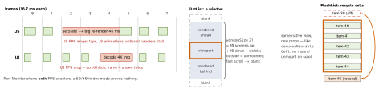

react-native · folio
In one line: An RN app drops frames on two independent threads: the JS thread (React render, business logic, JS-driven animation) and the UI/main thread (native layout commit, drawing, native animation). Each gets 16.7 ms per frame at 60 Hz (8.3 ms at 120 Hz ProMotion). Find which thread is late, prove it with a profiler on a release build, then apply the cheapest fix.
Download PDF Print view LaTeX source


What drops frames on each thread
- JS: re-rendering big subtrees, heavy parse/sort/filter in render, Context/store fan-out,
console.login loops, JS-driven animations. - UI: deep/overdrawn trees, huge image decodes, many views mounting at once, sync native-module work on main — diagnose as in UIKit: Instruments.
- New Arch (Fabric + JSI) removes the async JSON bridge, not the budgets: a 45 ms render is still 3 dropped JS frames.
Lists — FlatList knobs (VirtualizedList)
initialNumToRender(10) — first paint: just fill one screen.maxToRenderPerBatch(10) — fill rate vs responsiveness.windowSize(21, in viewports) — lower = less memory, more blank.removeClippedSubviews— detach off-screen views (Android default).getItemLayout— fixed height → no measuring, instantscrollToIndex.keyExtractor— stable ids, never the index.- Stable
renderItem(useCallback) +memorow + primitive props, or every row re-renders on every parent render. - FlashList (Shopify) recycles cells; v2: New Architecture only, JS-only, no size estimates (v1 needed
estimatedItemSize);getItemType= separate pools per row kind. Trap:useStatein a recycled cell leaks into the next item.
Example — a list row that does not re-render
const Row = memo(({ id, title, onPress }: P) => (
<Pressable onPress={() => onPress(id)}>
<Text>{title}</Text></Pressable>));
function Feed({ items }: { items: Item[] }) {
const onPress = useCallback((id: string) => open(id), []);
const renderItem = useCallback(({ item }) => ( // stable
<Row id={item.id} title={item.title}
onPress={onPress} />), [onPress]);
return <FlatList data={items} renderItem={renderItem}
keyExtractor={(i) => i.id} // not index
getItemLayout={(_, i) =>
({ length: 64, offset: 64 * i, index: i })}
windowSize={7} />;
}Profiling toolbox
React Native DevTools (Profiler, Memory/heap snapshots; default since 0.76) · Hermes sampling profiler · Perf Monitor · Xcode Time Profiler, Animation Hitches, Allocations/Leaks · Android Studio profilers, Perfetto. Test on a low-end Android.
Re-renders, memoisation, heavy work
- Find: React DevTools Profiler (flame chart, “why did this render?”, highlight updates),
why-did-you-render. - Memoise at boundaries (rows, heavy subtrees):
memois useless if the parent passes a new object/closure each render. React Compiler automates it. - Context: every consumer re-renders on a new value — split by change rate,
useMemothe value, or use a selector store. - Off JS: native/JSI (C++), worklets, the server;
startTransition; chunk long loops; defer until after the navigation transition.
Images · startup · bundle · leaks
- Images: decoded size = w ×h ×4 bytes — ask the CDN for display size.
expo-image(SDWebImage/Glide, memory+disk cache,cachePolicy) or FastImage. - Startup: Hermes ships bytecode (no parse at launch, mmap’d); Metro
inlineRequires+ lazyrequire()defer module init; TurboModules load on first use (legacy modules init eagerly). - Bundle: source-map visualiser; drop giant deps, whole-lodash imports.
- Leaks: listeners without
sub.remove()in effect cleanup, unclearedsetInterval, closures pinning big data, mounted screen stacks.
Traps
- Measuring in dev mode:
__DEV__checks, no minify, debugger attached — often several × slower. Profile a release build. - “
useMemoeverywhere” — memo costs; fix the unstable prop.key={index}— reorders reuse the wrong row state. - Native driver/Reanimated keep animation smooth while JS is busy, but the tap handler is still late — the JS problem remains.
Remember
Which thread? Release build? Measure, then fix the cause: fewer renders · fewer views · smaller images · less JS at startup.